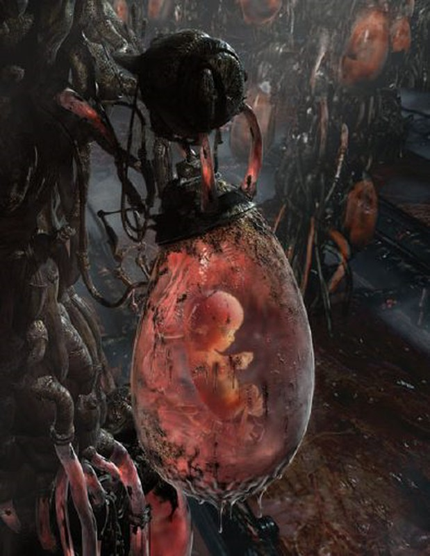

On the edge of the universe, a mass of decaying world-ships known as the Legion is traveling in the seams between the stars. For generations, a war for control of the Legion has been waged, with no clear resolution. As worlds continue to die, a desperate plan is put into motion. Zan wakes with no memory, prisoner of a people who say they are her family. She is told she is their salvation – the only person capable of boarding the Mokshi, a world-ship with the power to leave the Legion.
But Zan’s new family is not the only one desperate to gain control of the prized ship. Zan finds that she must choose sides in a genocidal campaign that will take her from the edges of the Legion’s gravity well to the very belly of the world. Zan will soon learn that she carries the seeds of the Legion’s destruction – and its possible salvation. But can she and her ragtag band of followers survive the horrors of the Legion and its people long enough to deliver it? In the tradition of The Fall of Hyperion and Dune, The Stars are Legion is an epic and thrilling tale about tragic love, revenge, and war as imagined by one of the genre’s most celebrated new writers.
